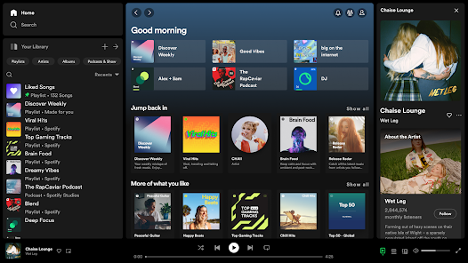
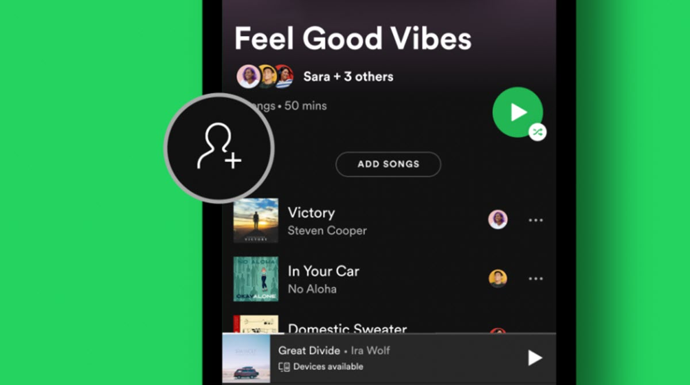
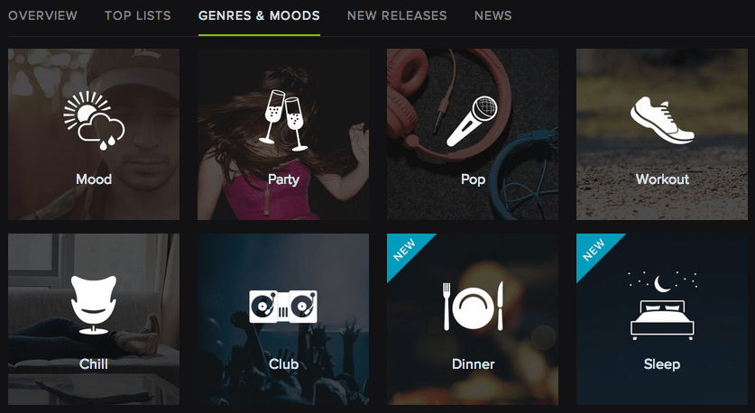

El descubrimiento musical en Spotify es como abrir una ventana nueva cada día: nunca sabes qué canción puede atraparte. Gracias a herramientas como Discover Weekly o Radar de Novedades, la plataforma se convierte en un puente hacia artistas y géneros que quizá nunca habrías buscado por tu cuenta. Lo interesante es cómo los algoritmos mezclan tus gustos con tendencias globales, haciendo que una playlist pueda llevarte de una balada acústica a un ritmo afrobeat en cuestión de segundos. Esa mezcla inesperada es la que mantiene viva la emoción de escuchar música: siempre hay algo nuevo esperando a sorprenderte.

Listas colaborativas
La magia de las listas colaborativas en Spotify
Las listas colaborativas de Spotify son como una reunión de amigos en formato digital: cada quien aporta un pedacito de su mundo musical y, sin darte cuenta, terminas con una mezcla única que no existiría sin ese grupo en particular. Son perfectas para planear un viaje en carretera, una fiesta o incluso para compartir canciones que describen cómo nos sentimos en el día a día. Lo bonito es que no hay reglas: una misma playlist puede saltar del reguetón al rock clásico, del indie a la salsa, y justamente en esa diversidad está la magia. Al final, más que una lista de canciones, se convierte en un recuerdo compartido.

Mood & Música
El poder de las playlists según el estado de ánimo
La música en Spotify tiene la capacidad de convertirse en banda sonora de nuestros estados de ánimo: desde playlists para concentrarse y estudiar hasta esas llenas de energía que acompañan una sesión de ejercicio. Lo curioso es cómo un simple “mood playlist” puede transformar un día gris en algo más llevadero o intensificar aún más la emoción de un momento feliz. Spotify lo sabe bien y por eso ofrece colecciones diseñadas para cada sensación: relajación, motivación, nostalgia, amor, fiesta… Al final, elegir una playlist según el estado de ánimo es como elegir el filtro con el que queremos colorear el día.

Cultura global
Spotify como puente cultural
Spotify se ha convertido en un puente cultural que conecta a personas de todo el mundo a través de la música y los podcasts. Gracias a sus recomendaciones, hoy es más fácil descubrir ritmos coreanos, afrobeat nigeriano, reguetón latino o folk escandinavo sin tener que salir de casa. Esa diversidad sonora no solo amplía nuestros gustos, sino que también nos acerca a historias, idiomas y realidades diferentes. En cierto sentido, cada playlist global es una invitación a viajar sin maleta, a explorar culturas enteras desde unos simples audífonos.